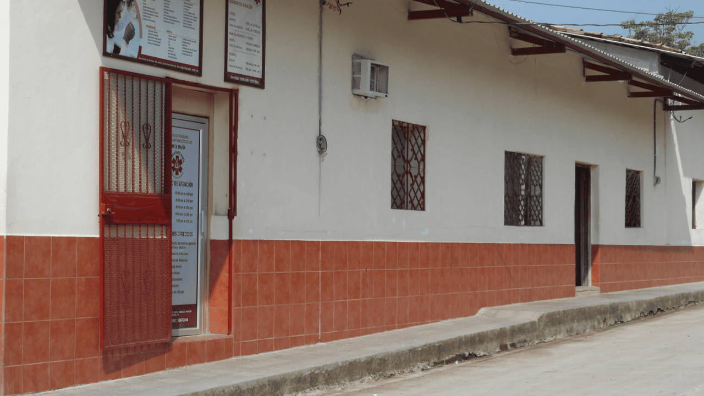
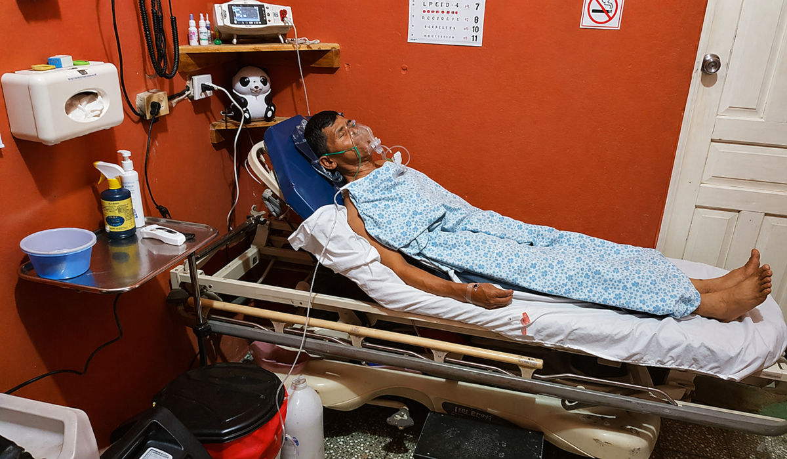

Atención en salud con compromiso social
Apoyando a las comunidades que más lo necesitan
El Proyecto San Francisco de Asís brinda atención en salud a personas de escasos recursos, ofreciendo servicios médicos, laboratorio clínico y apoyo farmacéutico.

Noticias y eventos recientes
